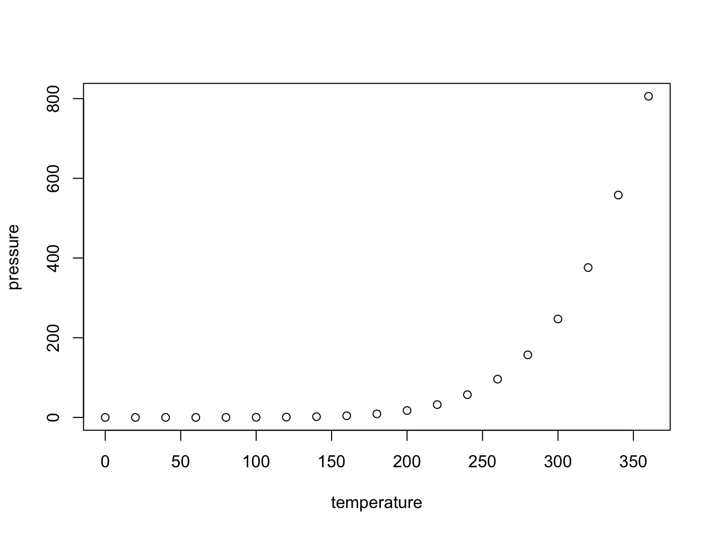

library(mosaic)
library(ggplot2)
library(WRS2)
library(lm.beta)
library(gamm4)
library(dplyr)
library(plyr)
library(rstatix)Difference Scores: Paired Samples T-test
Height Example
Load necessary libraries
Set seed for reproducibility
set.seed(123)Define means and standard errors (retrieved from https://www.cdc.gov/nchs/data/series/sr_03/sr03-046-508.pdf)
mean_male <- 175.3 # for all groups 20+
mean_female <- 161.3 # for all groups 20+
se_male <- 0.19 #n = 5,092
se_female <- 0.19 #n = 5,510
sd_male <- 13.6
sd_female <- 14.1
n_male <- 5092 # sample size
n_female <- 5510 # sample size
samp_n <- 30Generate sample height data for males in cm
heights_male <- rnorm(n = samp_n, mean = mean_male, sd = sd_male) #use estimates from larger sample, pull n = samp_nGenerate sample height data for females in cm
heights_female <- rnorm(n = samp_n, mean = mean_female, sd = sd_female) #use estimates from larger sample, pull n = samp_nCombine data into a data frame
height_data <- data.frame(
Sex = factor(c(rep(0, samp_n), rep(1, samp_n))), # Convert to numeric: 1 for Male, 0 for Female
Height = c(heights_female, heights_male)
)
# Perform the t-test
t_test_result <- t.test(Height ~ Sex, data = height_data, var.equal = TRUE)
# Compute Cohen's d
cohen_d<-cohens_d(Height ~ Sex, data = height_data, var.equal = TRUE)
# Generate sample height data for males for larger sample in cm
heights_male_larger <- rnorm(n = n_male, mean = mean_male, sd = sd_male) #use estimates from larger sample
# Generate sample height data for females in cm
heights_female_larger <- rnorm(n = n_female, mean = mean_female, sd = sd_female) #use estimates from larger sample
# Combine data into a data frame
height_data_larger <- data.frame(
Sex = factor(c(rep(0, n_female), rep(1, n_male))), # Convert to numeric: 1 for Male, 0 for Female
Height = c(heights_female_larger, heights_male_larger)
)
# Perform the t-test
t_test_result_larger <- t.test(Height ~ Sex, data = height_data_larger, var.equal = TRUE)
# Compute Cohen's d
cohen_d_larger<-cohens_d(Height ~ Sex, data = height_data_larger, var.equal = TRUE)
# Extract the means and standard deviations from the t-test result
means_male <- t_test_result$estimate[1]
means_female <- t_test_result$estimate[2]
# Subset data for males and females
male_heights <- height_data$Height[height_data$Sex == 1]
female_heights <- height_data$Height[height_data$Sex == 0]
# Reverse the order of levels in the Species variable
height_data$Sex <- factor(height_data$Sex, levels = levels(height_data$Sex))
# Define Ravenclaw inspired colors
ravenclaw_colors <- c("#222f5b", "#b0b7bc") # Blue and SilverPlot the barplot with error bars
p_bar <- ggplot(height_data, aes(x = Sex, y = Height, fill = Sex)) +
geom_bar(stat = "summary", fun = "mean", color = "black", width = 0.4) + # Adjust width here
geom_errorbar(stat = "summary", fun.data = "mean_cl_boot", width = 0.1, color = "black") +
geom_text(x = 0.5, y = max(height_data$Height) + 3,
label = paste("t(", t_test_result$parameter, ") = ", abs(round(t_test_result$statistic, 2)), ", p = ", round(t_test_result$p.value, 3), sep = ""),
size = 6, color = "black", vjust = 0, hjust = -.55) +
labs(x = "Sex", y = "Mean Height (cm)", title = "Mean Height by Sex") +
scale_fill_manual(values = ravenclaw_colors, labels = c("Female", "Male")) + # Use Ravenclaw colors
scale_x_discrete(labels = c("Female", "Male")) +
scale_y_continuous(expand = c(0,0),
limits = c(0,max(height_data$Height) + 15)) +
theme_bw() + # Set background theme to black and white
theme(text = element_text(size = 18), # Increase text size
panel.border = element_blank(), # Remove panel border
panel.grid.minor = element_blank(), # Remove major grid lines
axis.line.x = element_line(), axis.line.y = element_line())Save the barplot as a TIFF file with dimensions 9 x 6 inches
ggsave(filename = "barplot_height_by_sex.tiff", plot = p_bar, width = 9, height = 6, dpi = 600)Perform linear regression
lm_model <- lm(Height ~ Sex, data = height_data)
print("\nResults of linear regression:")[1] "\nResults of linear regression:"summary(lm_model)
Call:
lm(formula = Height ~ Sex, data = height_data)
Residuals:
Min 1Q Median 3Q Max
-26.11 -7.87 -1.55 7.68 28.07
Coefficients:
Estimate Std. Error t value Pr(>|t|)
(Intercept) 163.81 2.30 71.31 <2e-16 ***
Sex1 10.84 3.25 3.34 0.0015 **
---
Signif. codes: 0 '***' 0.001 '**' 0.01 '*' 0.05 '.' 0.1 ' ' 1
Residual standard error: 12.6 on 58 degrees of freedom
Multiple R-squared: 0.161, Adjusted R-squared: 0.147
F-statistic: 11.1 on 1 and 58 DF, p-value: 0.00148# Compute correlation coefficients and p-values
corr_result <- cor.test(height_data$Height, as.numeric(height_data$Sex))
print("Results of correlation test:")[1] "Results of correlation test:"print(corr_result)
Pearson's product-moment correlation
data: x and y
t = 3, df = 58, p-value = 0.001
alternative hypothesis: true correlation is not equal to 0
95 percent confidence interval:
0.164 0.595
sample estimates:
cor
0.401 Plot the scatterplot with linear regression line
p_scatter <- ggplot(height_data, aes(x = as.numeric(Sex), y = Height, color = Sex)) +
geom_point(alpha = 0.6, position = position_jitter(width = 0.02, height = 0), size = 3) + # Larger dots
geom_smooth(method = "lm", se = TRUE, color = "black") +
geom_text(x = 0.5, y = max(height_data$Height) + 3,
label = paste("β = ", round(lm.beta(lm_model)$standardized.coefficients[2], 2), ", t(", lm_model$df.residual, ") = ", round(summary(lm_model)$coefficients[2, 3], 2),
", p = ", round(summary(lm_model)$coefficients[2, 4], 3), sep = ""),
vjust = -0.5, hjust = -0.25, size = 6, color = "black") +
labs(x = "Sex", y = "Height (cm)", title = "Height by Sex") +
scale_color_manual(values = ravenclaw_colors, labels = c("Female", "Male")) + # Use Ravenclaw colors
scale_x_discrete(labels = c("Female", "Male")) +
coord_cartesian(ylim = c(150, max(height_data$Height) + 10)) + # Adjust y-axis limits
theme_bw() + # Set background theme to black and white
theme(text = element_text(size = 18), # Increase text size
panel.border = element_blank(), # Remove panel border
panel.grid.minor = element_blank(), # Remove major grid lines
axis.line.x = element_line(), axis.line.y = element_line())Save the scatterplot as a TIFF file
ggsave(filename = "scatterplot_height_by_sex.tiff", plot = p_scatter, width = 9, height = 6, dpi = 600)Including Plots
You can also embed plots, for example:

Note that the echo = FALSE parameter was added to the code chunk to prevent printing of the R code that generated the plot.